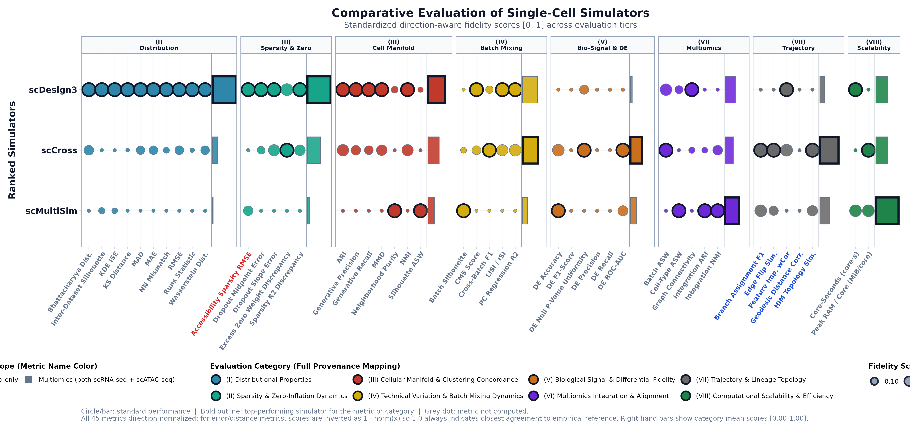
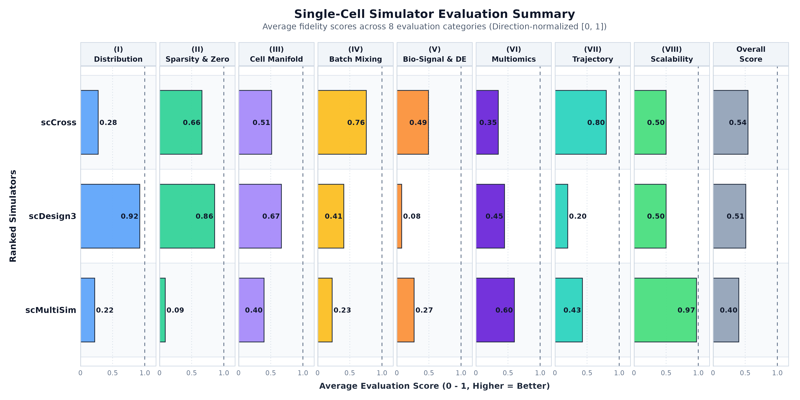
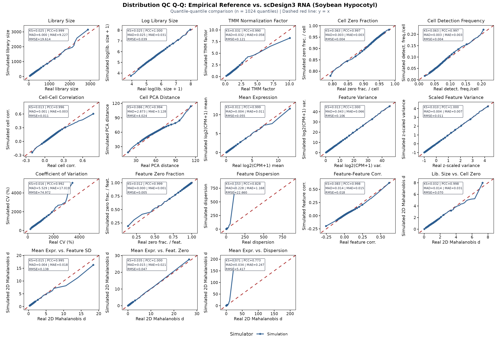
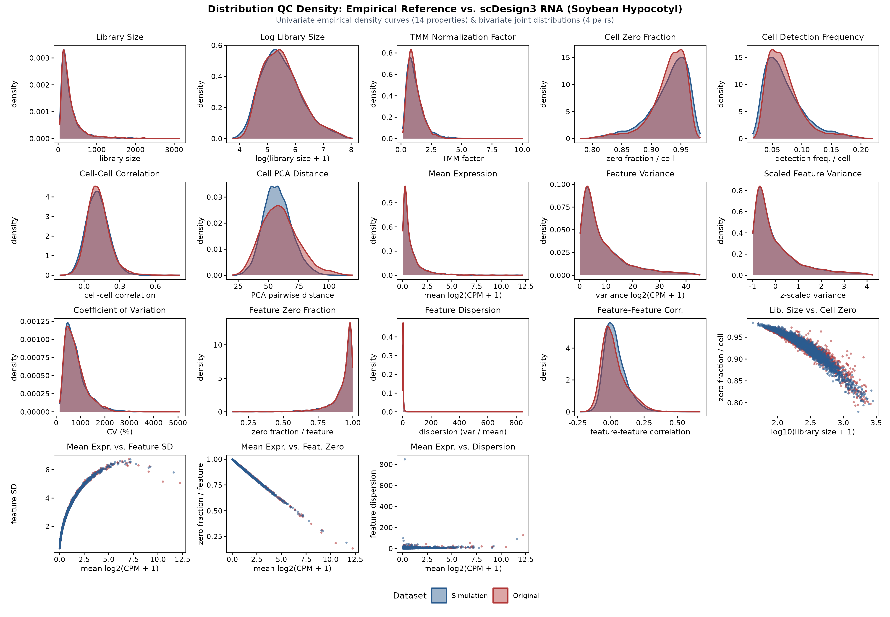
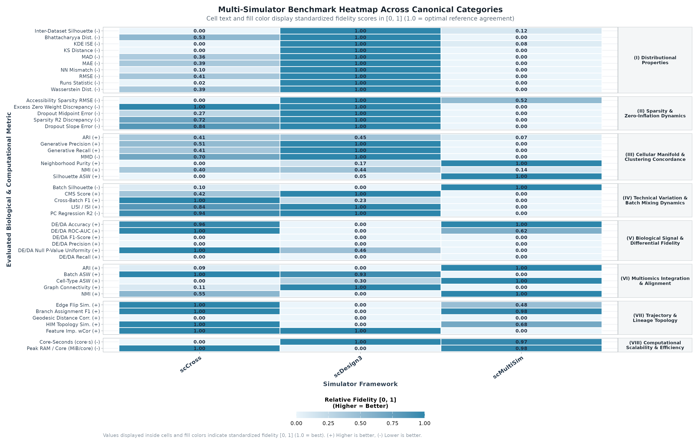
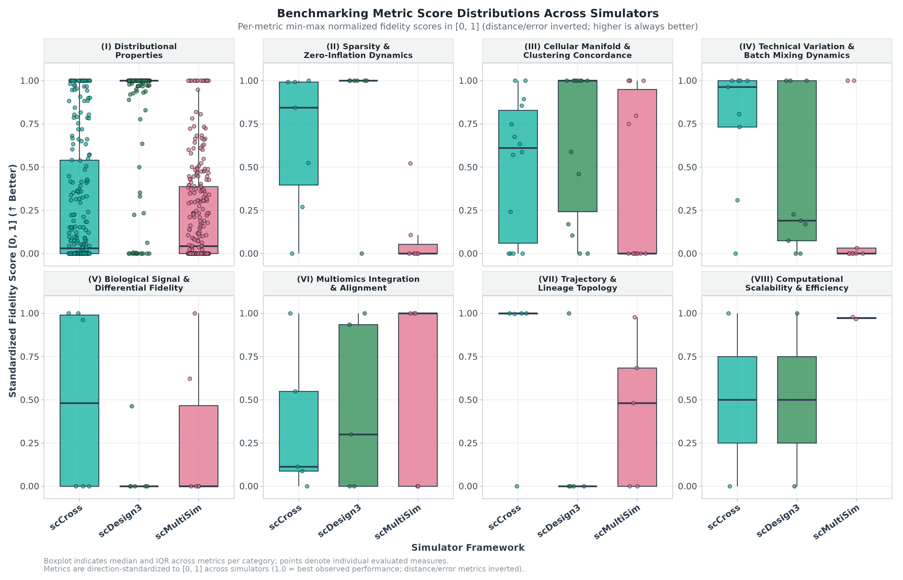
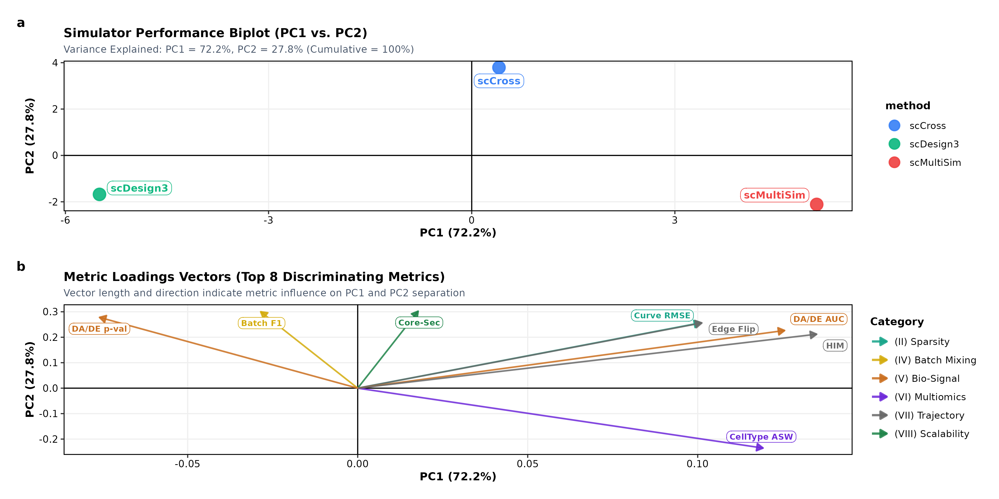
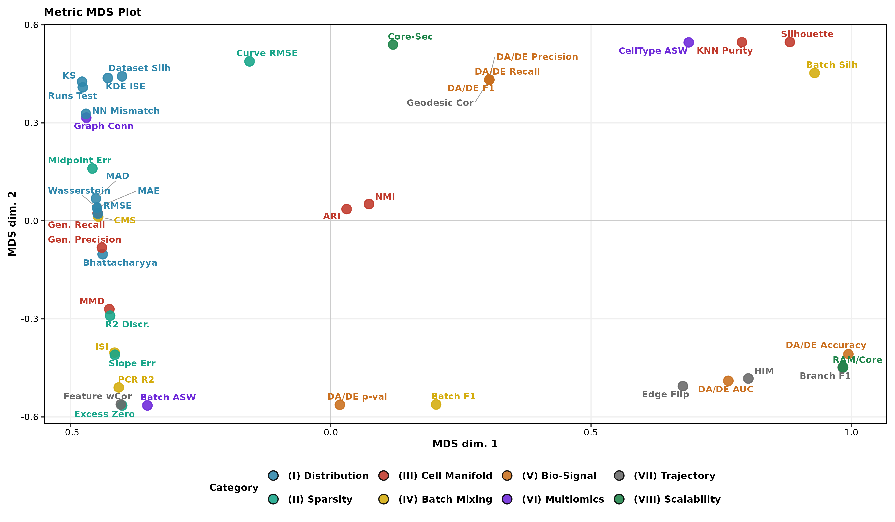
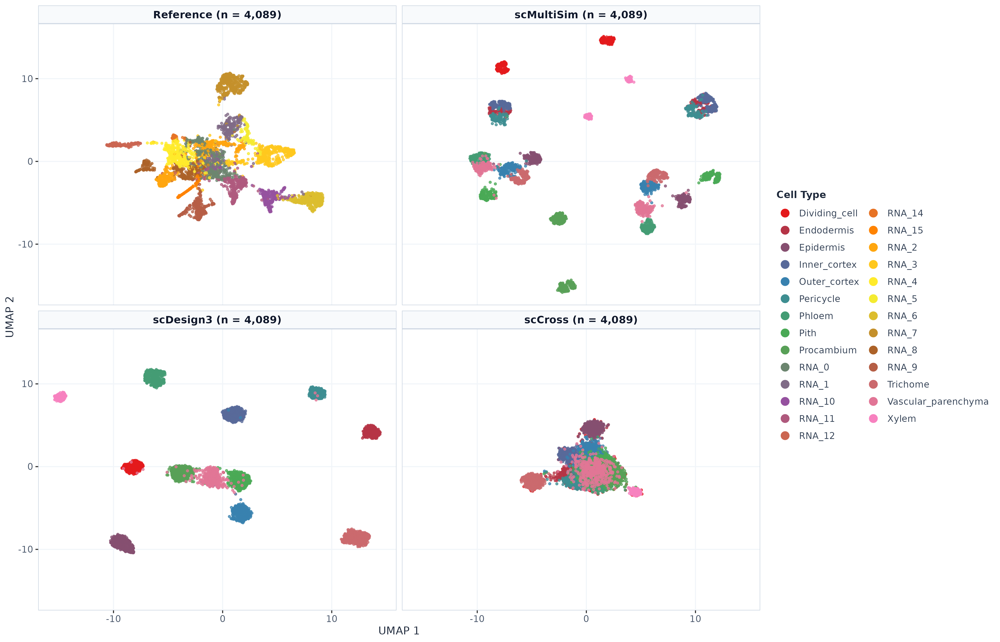
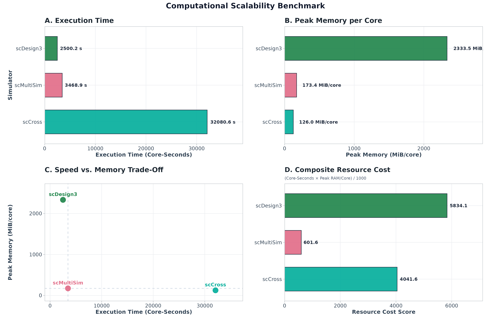

Demonstration 4: Unpaired Multiomics (scRNA-seq + scATAC-seq) Simulation Evaluation
Source:vignettes/demo-unpaired-multiomics.Rmd
demo-unpaired-multiomics.RmdIntroduction
In unpaired single-cell multiomics designs, gene expression (scRNA-seq) and chromatin accessibility (scATAC-seq) are profiled from separate, non-overlapping populations of single cells harvested from the same biological tissue or sibling aliquots. Unlike paired co-assays, cell barcode in the RNA count matrix does not correspond to cell barcode in the ATAC matrix, and the two modalities frequently differ in total cell count, batch structure, and annotation granularity.
Simulating and evaluating unpaired multiomics introduces distinct
methodological requirements: * Unequal Cell Counts &
Independent Barcodes: Evaluators must compare RNA and ATAC
layers independently without assuming 1-to-1 cell correspondence. *
Shared-Manifold Alignment Without Cell Pairing:
Cross-modality coherence (Category VI) is assessed at the shared
biological population and integrated latent embedding level (joint
cell-type alignment, batch mixing, and graph connectivity) rather than
direct cell-to-cell feature pairing. * Modality-Specific
Scalability Accounting: Some simulators
(scMultiSim, scCross) simulate both modalities
in a single unified run, whereas modular frameworks
(scDesign3) fit and simulate scRNA-seq and scATAC-seq in
separate jobs with distinct CPU core allocations and memory footprints.
scSimEval natively supports both combined and
modality-separated resource tracking.
scSimEval handles unpaired designs
automatically when pairing = "unpaired" in
evaluate_multiomics_accuracy(),
evaluating all 8
active categories: 1. Category I: Distributional
Properties — Independent univariate distributional distances
across RNA genes and ATAC peaks. 2. Category II: Sparsity &
Zero-Inflation Dynamics — Logistic dropout modeling for RNA and
quadratic accessibility-sparsity curve fitting for ATAC. 3.
Category III: Cellular Manifold & Clustering
Concordance — Modality-specific manifold geometry, MMD,
Generative Precision & Recall, ASW, ARI, and NMI. 4.
Category IV: Technical Variation & Batch Mixing
Dynamics — Batch Silhouette Width, Principal Component
Regression
(),
CMS, and ISI per modality. 5. Category V: Biological Signal
& Differential Fidelity — Pseudobulk edgeR-QLF
differentially expressed genes (DEG) and differentially accessible peaks
(DA). 6. Category VI: Multiomics Integration &
Alignment — Cross-modality latent space alignment, joint
Cell-Type ASW, joint Batch ASW, and within-cell-type graph connectivity
on integrated embeddings. 7. Category VII: Trajectory &
Lineage Topology — Transcriptomic lineage topology (HIM,
edge-flip, geodesic correlation, and branch F1). 8. Category
VIII: Computational Scalability & Efficiency —
Hardware-normalized core_seconds and
memory_per_core_mib, supporting both unified and
modality-separated (RNA + ATAC) execution
logs.
1. Input Data Requirements & Case Study Setup
For unpaired evaluation, scSimEval accepts
modality-indexed lists of SingleCellExperiment objects
(with cell_type and batch in
colData of each SCE, or a stacked multi-modal SCE annotated
with colData$modality): *
ref_multi = list(RNA = ref_rna_sce, ATAC = ref_atac_sce)
(independent cell barcodes and counts) *
sim_multi = list(RNA = sim_rna_sce, ATAC = sim_atac_sce)
Case Study: Soybean Hypocotyl Unpaired Multiomics (3 Simulators)
We benchmark 3 single-cell multiomics simulators on an empirical unpaired Soybean Hypocotyl (Glycine max) dataset: * scRNA-seq Reference: 2,000 genes 4,089 cells across 15 cell types and 2 biological batches (92.91% sparsity). * scATAC-seq Reference: 6,000 peaks 6,093 cells across 3 biological batches (82.44% sparsity).
The 3 evaluated simulators and their empirical HPC resource logs are summarized below:
| Simulator | Execution Mode | Wall-Clock Runtime (s) | Peak Resident Memory | CPU Cores |
|---|---|---|---|---|
| scMultiSim | Combined (RNA + ATAC) | 216.80 | 2,774.70 MiB | 16 |
| scDesign3 | Separate (RNA / ATAC) | 89.19 (RNA) / 268.28 (ATAC) | 2,190.40 MiB (RNA) / 9,334.00 MiB (ATAC) | 16 (RNA) / 4 (ATAC) |
| scCross | Combined (RNA + ATAC) | 2,005.04 | 2,113.62 MB | 16 |
2. Running the Unpaired Multiomics Benchmarking Pipeline
Setting pairing = "unpaired" in
evaluate_multiomics_accuracy()
activates independent
modality evaluation and unpaired joint-embedding integration scoring.
Below is the exact workflow demonstrating both combined
(scMultiSim, scCross) and modality-separated
(scDesign3) resource logging:
library(scSimEval)
# Validate empirical reference (extracts independent RNA and ATAC SCE layers + colData)
ref_val <- validate_multiomics_input(
readRDS("soy_hypocotyl_reference_integrated_combined.rds"),
"Soybean Hypocotyl (Unpaired)"
)
# Example A: Combined resource tracking (scMultiSim / scCross)
eval_scmultisim <- evaluate_multiomics_accuracy(
ref_multi = list(RNA = ref_val$m1_obj, ATAC = ref_val$m2_obj),
sim_multi = list(RNA = sim_val$m1_obj, ATAC = sim_val$m2_obj),
pairing = "unpaired",
elapsed_time = 216.804,
time_unit = "seconds",
memory_mb = 2774.70,
memory_unit = "MiB",
sim_cores = 16L,
compute_bivariate = FALSE,
threads = 16L,
verbose = FALSE
)
# Example B: Separate modality resource tracking (scDesign3)
eval_scdesign3 <- evaluate_multiomics_accuracy(
ref_multi = list(RNA = ref_val$m1_obj, ATAC = ref_val$m2_obj),
sim_multi = list(RNA = sim_d3$m1_obj, ATAC = sim_d3$m2_obj),
pairing = "unpaired",
separate_resources = list(
rna = list(elapsed_time = 89.19, memory_mb = 2190.40, time_unit = "seconds", memory_unit = "MiB", sim_cores = 16L),
atac = list(elapsed_time = 268.28, memory_mb = 9334.00, time_unit = "seconds", memory_unit = "MiB", sim_cores = 4L)
),
compute_bivariate = FALSE,
threads = 16L,
verbose = FALSE
)
3. Inspecting Unpaired Benchmark Results Across Categories
Overall Fidelity Leaderboard
Aggregating direction-aware normalized scores across all 8 evaluation categories ranks the 3 candidate simulators on Soybean Hypocotyl unpaired multiomics:
df_norm <- scSimEval::normalize_bubble_scores(final_benchmark_df)
agg <- stats::aggregate(Score_Norm ~ Method + Category, data = df_norm, FUN = mean, na.rm = TRUE)
leaderboard <- stats::aggregate(Score_Norm ~ Method, data = agg, FUN = mean, na.rm = TRUE)
leaderboard <- leaderboard[order(leaderboard$Score_Norm, decreasing = TRUE), ]
leaderboard$Rank <- seq_len(nrow(leaderboard))
leaderboard$Average_Fidelity <- sprintf("%.1f%%", leaderboard$Score_Norm * 100)
leaderboard[, c("Rank", "Method", "Average_Fidelity", "Score_Norm")]
#> Rank Method Average_Fidelity Score_Norm
#> 1 1 scCross 54.4% 0.5438205
#> 2 2 scDesign3 51.0% 0.5095970
#> 3 3 scMultiSim 40.1% 0.4006803
Category-Level Score Matrix
Inspecting mean normalized fidelity across each of the 8 categories highlights the complementary trade-offs among simulators:
cat_mat <- reshape(agg, idvar = "Category", timevar = "Method", direction = "wide")
colnames(cat_mat) <- sub("^Score_Norm\\.", "", colnames(cat_mat))
cat_mat[, -1] <- round(cat_mat[, -1], 4)
cat_mat
#> Category scCross scDesign3
#> 1 (I) Distributional Properties 0.2763 0.9228
#> 4 (II) Sparsity & Zero-Inflation Dynamics 0.6601 0.8571
#> 7 (III) Cellular Manifold & Clustering Concordance 0.5146 0.6659
#> 10 (IV) Technical Variation & Batch Mixing Dynamics 0.7567 0.4069
#> 13 (V) Biological Signal & Differential Fidelity 0.4936 0.0771
#> 16 (VI) Multiomics Integration & Alignment 0.3499 0.4469
#> 19 (VII) Trajectory & Lineage Topology 0.7993 0.2000
#> 22 (VIII) Computational Scalability & Efficiency 0.5000 0.5000
#> scMultiSim
#> 1 0.2220
#> 4 0.0898
#> 7 0.3962
#> 10 0.2258
#> 13 0.2703
#> 16 0.6000
#> 19 0.4284
#> 22 0.9729
Representative Category Inspections
# Category I: Distributional Properties (RNA & ATAC)
head(subset(final_benchmark_df, grepl("Distributional", Category))[, c("Method", "Modality", "Property", "Metric", "Value", "Score")], 6)
#> Method Modality Property Metric Value
#> scMultiSim.1 scMultiSim RNA library_size Wasserstein 708.35216434
#> scMultiSim.2 scMultiSim RNA library_size KS 0.78234287
#> scMultiSim.3 scMultiSim RNA library_size MAD 727.00000000
#> scMultiSim.4 scMultiSim RNA library_size Bhattacharyya 0.02263797
#> scMultiSim.5 scMultiSim RNA library_size Runs_Statistic -65.84333722
#> scMultiSim.6 scMultiSim RNA library_size NN_Mismatch 0.97166667
#> Score
#> scMultiSim.1 708.35216434
#> scMultiSim.2 0.78234287
#> scMultiSim.3 727.00000000
#> scMultiSim.4 0.02263797
#> scMultiSim.5 -65.84333722
#> scMultiSim.6 0.97166667
# Category VI: Unpaired Multiomics Integration & Alignment
subset(final_benchmark_df, grepl("Multiomics Integration", Category))[, c("Method", "Property", "Metric", "Value", "Score")]
#> Method Property Metric Value
#> scMultiSim.313 scMultiSim multiomics_integration batch_asw 0.9676768
#> scMultiSim.314 scMultiSim multiomics_integration cell_type_asw 0.5190366
#> scMultiSim.315 scMultiSim multiomics_integration graph_connectivity 0.9990414
#> scMultiSim.316 scMultiSim multiomics_integration ari 0.8840197
#> scMultiSim.317 scMultiSim multiomics_integration nmi 0.8091658
#> scDesign3.313 scDesign3 multiomics_integration batch_asw 0.9966380
#> scDesign3.314 scDesign3 multiomics_integration cell_type_asw 0.5143772
#> scDesign3.315 scDesign3 multiomics_integration graph_connectivity 1.0000000
#> scDesign3.316 scDesign3 multiomics_integration ari 0.1462852
#> scDesign3.317 scDesign3 multiomics_integration nmi 0.2051969
#> scCross.313 scCross multiomics_integration batch_asw 0.9986540
#> scCross.314 scCross multiomics_integration cell_type_asw 0.5123830
#> scCross.315 scCross multiomics_integration graph_connectivity 0.9991497
#> scCross.316 scCross multiomics_integration ari 0.2110678
#> scCross.317 scCross multiomics_integration nmi 0.5366442
#> Score
#> scMultiSim.313 0.9676768
#> scMultiSim.314 0.5190366
#> scMultiSim.315 0.9990414
#> scMultiSim.316 0.8840197
#> scMultiSim.317 0.8091658
#> scDesign3.313 0.9966380
#> scDesign3.314 0.5143772
#> scDesign3.315 1.0000000
#> scDesign3.316 0.1462852
#> scDesign3.317 0.2051969
#> scCross.313 0.9986540
#> scCross.314 0.5123830
#> scCross.315 0.9991497
#> scCross.316 0.2110678
#> scCross.317 0.5366442
# Category VIII: Computational Scalability & Efficiency
subset(final_benchmark_df, grepl("Scalability", Category))[, c("Method", "Modality", "Property", "Metric", "Value", "Score")]
#> Method Modality Property Metric
#> scMultiSim.318 scMultiSim Computation resource_usage core_seconds
#> scMultiSim.319 scMultiSim Computation resource_usage memory_per_core_mib
#> scDesign3.318 scDesign3 Computation resource_usage core_seconds
#> scDesign3.319 scDesign3 Computation resource_usage memory_per_core_mib
#> scCross.318 scCross Computation resource_usage core_seconds
#> scCross.319 scCross Computation resource_usage memory_per_core_mib
#> Value Score
#> scMultiSim.318 3468.8640 3468.8640
#> scMultiSim.319 173.4187 173.4187
#> scDesign3.318 2500.1600 2500.1600
#> scDesign3.319 2333.5000 2333.5000
#> scCross.318 32080.6400 32080.6400
#> scCross.319 125.9816 125.9816
4. Publication-Grade Comparative Visualizations
4.1 Comparative Bubble Matrix
p_bubble <- plot_benchmark_bubble_matrix(final_benchmark_df, base_size = 12)
ggsave("figures/unpaired_benchmark_bubble_matrix.png", plot = p_bubble, width = 18, height = 8.5, dpi = 300)

Figure 1: Comparative Bubble Matrix across Unpaired Multiomics Evaluation Metrics. Visualizes direction-aware normalized fidelity scores across all 8 active categories for scCross, scDesign3, and scMultiSim on Soybean Hypocotyl.
4.2 Evaluation Summary Visualization
p_summary <- plot_evaluation_summary(final_benchmark_df, normalize_scores = TRUE, base_size = 11)
ggsave("figures/unpaired_evaluation_summary.png", plot = p_summary, width = 14, height = 7, dpi = 300)

Figure 2: Overall Simulator Evaluation Summary. Polar chart comparing category-level composite fidelity across all 8 evaluation dimensions.
4.3 Distribution QC Diagnostics: Q-Q Plots and Empirical Density
p_qc_qq <- plot_distribution_qc(
ref_data = ref_rna,
sim_data = sim_rna_scdesign3,
layout = "qq",
title = "Distribution QC Q-Q: Empirical Reference vs. scDesign3 RNA (Soybean Hypocotyl)"
)
ggsave("figures/unpaired_distribution_qc_qq.png", plot = p_qc_qq, width = 13, height = 9, dpi = 300)
p_qc_density <- plot_distribution_qc(
ref_data = ref_rna,
sim_data = sim_rna_scdesign3,
layout = "density",
title = "Distribution QC Density: Empirical Reference vs. scDesign3 RNA (Soybean Hypocotyl)"
)
ggsave("figures/unpaired_distribution_qc_density.png", plot = p_qc_density, width = 13, height = 9, dpi = 300)

Figure 3A: Distribution QC Quantile-Quantile (Q-Q) Diagnostics. Compares marginal library size, detection rate, feature mean, and feature variance quantiles between empirical Soybean Hypocotyl RNA and scDesign3.

Figure 3B: Distribution QC Empirical Density Overlays. Overlays empirical probability densities across marginal count properties.
4.4 Metric Heatmap
p_heatmap <- plot_metric_heatmap(final_benchmark_df, scale_fill = "relative", base_size = 10)
ggsave("figures/unpaired_metric_heatmap.png", plot = p_heatmap, width = 15, height = 9.5, dpi = 300)

Figure 4: Relative Metric Heatmap. Hierarchically clustered relative fidelity scores across all evaluated RNA, ATAC, and cross-modal integration metrics.
4.5 Metric Score Distributions Across Categories (Multi-Panel Boxplots)
p_boxplots <- plot_metric_boxplots(final_benchmark_df, score_type = "normalized", base_size = 11)
ggsave("figures/unpaired_metric_boxplots.png", plot = p_boxplots, width = 14, height = 9, dpi = 300)

Figure 5: Metric Score Distributions Across Evaluation Categories. Multi-panel boxplot showing score distributions and medians across all 8 evaluation categories.
4.6 Principal Component Analysis (PCA) Ordination
p_pca <- plot_metric_pca(final_benchmark_df, panel = "both", top_n_loadings = 8, base_size = 11)
ggsave("figures/unpaired_pca_ordination.png", plot = p_pca, width = 13, height = 6.5, dpi = 300)

Figure 6: PCA Ordination Biplot. Joint projection of simulators and top 8 influential metric loadings explaining performance variance.
4.7 Multidimensional Scaling (MDS) Metric Space
p_mds <- plot_metric_mds(final_benchmark_df, ordination_by = "summaries", normalize_scores = TRUE, base_size = 11)
ggsave("figures/unpaired_mds_metric_space.png", plot = p_mds, width = 12, height = 7, dpi = 300)

Figure 7: Multidimensional Scaling (MDS) Metric Space. Visualizes global pairwise proximity among simulators based on summary metric profiles.
4.8 UMAP Embeddings Grid Across Simulators
embedding_df <- compute_dataset_embeddings(
reference = ref_rna,
simulated = list_of_sim_rna_counts,
reduction = "umap",
cell_types = list_of_rna_cell_types,
seed = 42
)
p_umap <- plot_dataset_embeddings(
embedding_data = embedding_df,
reduction = "umap",
layout = "facet",
color_by = "cell_type",
base_size = 11
)
ggsave("figures/unpaired_umap_grid.png", plot = p_umap, width = 14, height = 9, dpi = 300)

Figure 8: Faceted UMAP Embeddings Grid. Compares 2D cellular manifold structure across the empirical Soybean Hypocotyl reference and all 3 simulators, colored by cell type.
4.9 Computational Scalability Benchmark (Combined 4-Panel)
p_scalability <- plot_scalability_benchmark(
benchmark_data = final_benchmark_df,
type = "composite",
layout = "4panel",
modality = "total",
time_unit = "core_seconds",
memory_unit = "MiB/core",
base_size = 11
)
ggsave("figures/unpaired_scalability_benchmark.png", plot = p_scalability, width = 13, height = 8.5, dpi = 300)

Figure 9: Composite 4-Panel Computational Scalability Benchmark. Evaluates cumulative core-seconds runtime, peak resident memory per core (MiB/core), cell throughput, and speed-memory trade-offs.
5. Context-Specific Insights & Simulator Recommendations
Evaluating unpaired Soybean Hypocotyl multiomics highlights distinct strengths across methodological families:
-
Best Overall Balance (
scCross, 54.4%): Led the overall leaderboard by achieving top scores in Trajectory & Lineage Topology (0.799), Batch Mixing Dynamics (0.757), and Differential Signal Fidelity (0.494), though at a substantially higher runtime cost (2,005 s across 16 cores). -
Highest Marginal & Manifold Fidelity
(
scDesign3, 51.0%): Dominated Distributional Properties (0.923), Sparsity & Zero-Inflation Dynamics (0.857), and Cellular Manifold Concordance (0.666), matching empirical RNA sparsity (92.92% vs. 92.91%) and ATAC median library size (2,102 vs. 2,096) with high precision. Because it fits RNA and ATAC separately, ATAC simulation requires higher per-core RAM (9,334 MiB across 4 cores). -
Best Scalability & Unpaired Integration
(
scMultiSim, 40.1%): Achieved the highest Computational Scalability score (0.973; 216.8 s combined runtime) and strongest Unpaired Multiomics Integration & Alignment score (0.600), making it well-suited for rapid cross-modal integration benchmarking.
6. Session Information
sessionInfo()
#> R version 4.6.2 (2026-10-29)
#> Platform: x86_64-pc-linux-gnu
#> Running under: Ubuntu 24.04.5 LTS
#>
#> Matrix products: default
#> BLAS: /usr/lib/x86_64-linux-gnu/blas/libblas.so.3.12.0
#> LAPACK: /usr/lib/x86_64-linux-gnu/lapack/liblapack.so.3.12.0 LAPACK version 3.12.0
#>
#> locale:
#> [1] LC_CTYPE=en_US.UTF-8 LC_NUMERIC=C
#> [3] LC_TIME=en_US.UTF-8 LC_COLLATE=en_US.UTF-8
#> [5] LC_MONETARY=en_US.UTF-8 LC_MESSAGES=en_US.UTF-8
#> [7] LC_PAPER=en_US.UTF-8 LC_NAME=C
#> [9] LC_ADDRESS=C LC_TELEPHONE=C
#> [11] LC_MEASUREMENT=en_US.UTF-8 LC_IDENTIFICATION=C
#>
#> time zone: Asia/Kolkata
#> tzcode source: system (glibc)
#>
#> attached base packages:
#> [1] stats graphics grDevices utils datasets methods base
#>
#> loaded via a namespace (and not attached):
#> [1] pbapply_1.7-5 gridExtra_2.3.1
#> [3] scSimEval_0.99.12 rlang_1.3.0
#> [5] magrittr_2.0.5 RcppAnnoy_0.0.23
#> [7] otel_0.3.0 matrixStats_1.5.0
#> [9] ggridges_0.5.7 compiler_4.6.2
#> [11] png_0.1-9 systemfonts_1.3.3
#> [13] vctrs_0.7.3 reshape2_1.4.5
#> [15] stringr_1.6.0 pkgconfig_2.0.3
#> [17] fastmap_1.2.0 XVector_0.52.0
#> [19] rmarkdown_2.32 ragg_1.5.2
#> [21] xfun_0.62 cachem_1.1.0
#> [23] jsonlite_2.0.0 DelayedArray_0.38.2
#> [25] BiocParallel_1.46.0 irlba_2.4.1
#> [27] parallel_4.6.2 cluster_2.1.8.3
#> [29] R6_2.6.1 ica_1.0-3
#> [31] bslib_0.12.0 stringi_1.8.9
#> [33] RColorBrewer_1.1-3 parallelly_1.50.0
#> [35] GenomicRanges_1.64.0 jquerylib_0.1.4
#> [37] scattermore_1.2 Rcpp_1.1.2
#> [39] Seqinfo_1.2.0 SummarizedExperiment_1.42.0
#> [41] knitr_1.52 future.apply_1.21.0
#> [43] IRanges_2.46.0 sctransform_0.4.3
#> [45] Matrix_1.7-6 igraph_2.3.4
#> [47] tidyselect_1.2.1 abind_1.4-8
#> [49] yaml_2.3.12 codetools_0.2-20
#> [51] listenv_1.1.0 lattice_0.23-1
#> [53] tibble_3.3.1 plyr_1.8.9
#> [55] Biobase_2.72.0 S7_0.2.2
#> [57] evaluate_1.0.5 Rtsne_0.17
#> [59] future_1.82.0 fastDummies_1.7.6
#> [61] desc_1.4.3 pillar_1.11.1
#> [63] MatrixGenerics_1.24.0 Seurat_6.0.0
#> [65] KernSmooth_2.23-27 stats4_4.6.2
#> [67] generics_0.1.4 RcppHNSW_0.7.0
#> [69] sp_2.2-4 S4Vectors_0.50.3
#> [71] ggplot2_4.0.4 scales_1.4.0
#> [73] globals_0.20.0 glue_1.8.1
#> [75] tools_4.6.2 RSpectra_0.16-2
#> [77] RANN_2.6.3 fs_2.1.0
#> [79] dotCall64_1.2 cowplot_1.2.0
#> [81] grid_4.6.2 SingleCellExperiment_1.34.0
#> [83] patchwork_1.3.2 cli_3.6.6
#> [85] textshaping_1.0.5 spam_2.11-4
#> [87] S4Arrays_1.12.1 dplyr_1.2.1
#> [89] uwot_0.2.5 gtable_0.3.6
#> [91] pls_2.9-0 ggsci_5.2.0
#> [93] sass_0.4.10 digest_0.6.39
#> [95] progressr_1.1.0 BiocGenerics_0.58.1
#> [97] SparseArray_1.12.3 ggrepel_0.9.8
#> [99] htmlwidgets_1.6.4 SeuratObject_5.4.0
#> [101] farver_2.1.2 htmltools_0.5.9
#> [103] pkgdown_2.2.1 lifecycle_1.0.5
#> [105] httr_1.4.9 CDI_1.10.0
#> [107] MASS_7.3-66